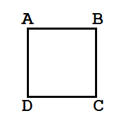

Welcome to Katik
Hai Sobat, Selamat datang di Katik :]
Sebuah web apps sederhana yang berfungsi untuk menghitung nilai luas
dan keliling bangun datar
Luas Persegi
Bujur Sangkar
Rumus Luas Persegi yaitu:
L = S x S
Dimana :
L = Luas
S = Sisi
Hitung Luas
L = S x S
L = S x S
Keliling Persegi
Bujur Sangkar
Rumus Keliling Persegi yaitu:
K = 4 x S
Dimana :
K = Keliling
S = Sisi
Hitung Keliling
K = 4 x S
K = 4 x S